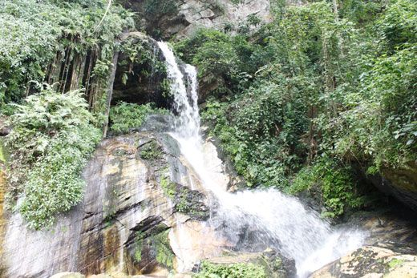
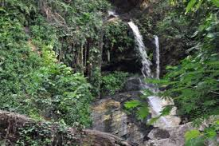
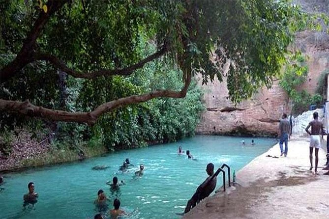
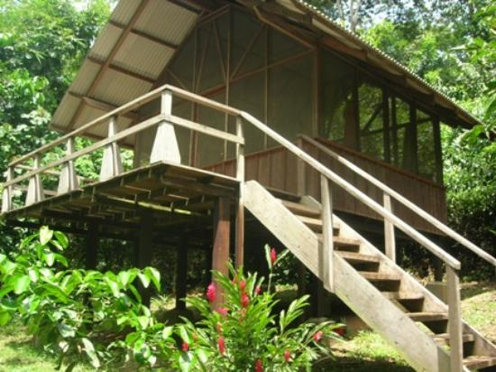
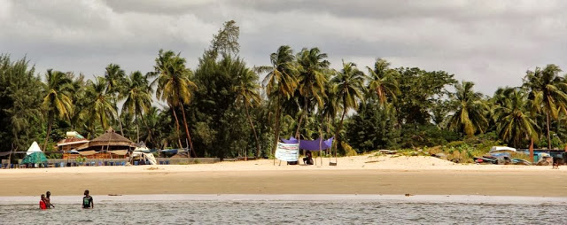
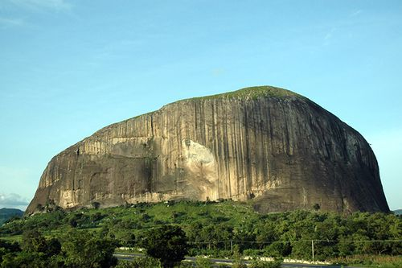

Ikogosi Warm Springs en Ekiti State es una de las creaciones más asombrosas de la naturaleza en el mundo. La cálida primavera fluye hacia abajo de una colina, justo al lado de un manantial frío, después de lo cual se encuentran en una confluencia y continúan su viaje hacia un río. Los visitantes están encantados con historias sobre los poderes curativos a los que se puede acceder bañándose en el agua de la primavera. El hecho de que las temperaturas de ambos manantiales fluyan de la misma fuente sigue siendo motivo de admiración tanto para los geólogos como para los turistas. Ikogosi Warm Springs está rodeado de vegetación densa y hermosa, y también hay un complejo.
 El paisaje agreste de la montaña Afi ofrece un santuario esencial para decenas de comunidades en riesgo de origen animal, en particular el gorila y el chimpancé entre otros animales. También es un área clave para las aves, y es el hogar de uno de los mayores dormideros de golondrinas en África. La montaña Afi ofrece 100 kilometros cuadrados de tierras bajas y bosque. La Oficina Estatal de Turismo ha creado un impresionante puente colgante, que es una necesidad para todos los fotógrafos en ciernes.

Aparte de la maravillosa variedad de animales, los visitantes del Parque Nacional Yankari quedarán encantados con su manantial. La zona está adornada con luces, lo que crea un efecto de luz mágico. El agua caliente sale a borbotones de la base del acantilado. Desde sus playas y cascadas a sus parques nacionales en expansión, formaciones rocosas impresionantes y estimulante variedad de vida silvestre, Nigeria tiene algunas de las mejores escenas para fotografiar y ofrece a los fotógrafos condiciones cómodas para trabajar.

A menudo conocido como el Obudu Mountain Resort, el rancho se encuentra en la impresionante meseta de Obudu. Recientemente ha sido restaurado a su estilo antigio, por lo que nunca ha habido un mejor momento para documentarlo en imágenes. Las vistas desde el rancho son verdaderamente impresionantes. Las puestas de sol y amaneceres ofrecen una experiencia diferente, pero visualmente igual de hermosa. Para fotografiar el complejo desde diferentes puntos de vista, se puede realizar una caminata guiada o por teleférico.

Esta hermosa y protegida playa artificial, tiene vistas al Atlántico y barcos invitando a las aguas tranquilas. Es un punto de relajación para los lugareños y visitantes por igual, y atrae a una multitud de personas, sobre todo los fines de semana.
Esta magnífica piedra es el símbolo de Abuja, y para muchos, el símbolo de la propia Nigeria. La roca, representada en el billete de 100 naira, tiene 725 metros de altura, y alrededor de 3,1 kilometros de circunferencia. La Roca Zuma parece a una pequeña montaña, y los que tienen un buen ojo dicen que pueden ver una cara humana en su superficie. Los lugareños creen la roca tiene poderes mágicos. Los visitantes suelen cautivarse por esta maravilla natural, aunque los lugareños a menudo pasan sin ni siquiera una mirada.
